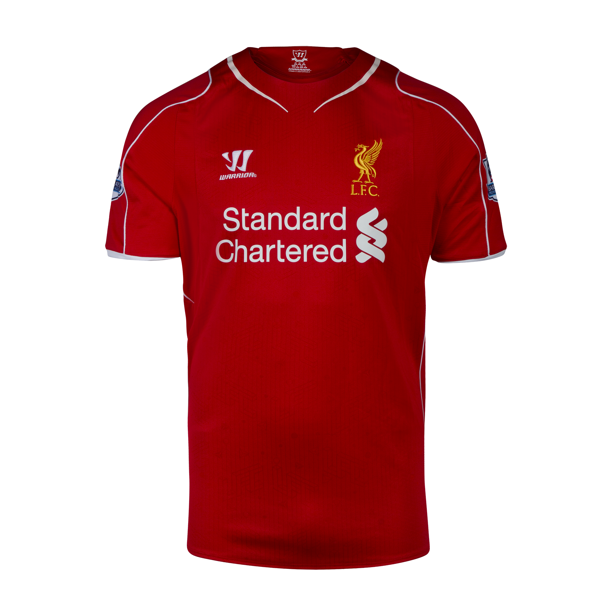

O Real Madrid Club de Fútbol, conhecido como Real Madrid, é um dos clubes de futebol mais renomados
e bem-sucedidos do mundo. Fundado em 6 de março de 1902, por um grupo de entusiastas do futebol,
o clube rapidamente se destacou no cenário esportivo espanhol e internacional.
Nos primeiros anos, o Real Madrid
conquistou títulos regionais e nacionais, mas foi na década de 1950 que começou a construir sua lenda. Sob a liderança
de Santiago Bernabéu, que se tornou presidente em 1943, o clube investiu pesadamente na contratação de grandes
jogadores e na construção do estádio Santiago Bernabéu, inaugurado em 1947.
Para comprar clique aqui
O FC Barcelona, conhecido como Barça, é um dos clubes de futebol mais icônicos do mundo, com uma rica
história que remonta ao final do século XIX. Fundado em 29 de novembro de 1899 por um grupo de futebolistas
liderados por Joan Gamper, o clube rapidamente se estabeleceu como uma potência no futebol espanhol e europeu.
O Barcelona alcançou um grande sucesso internacional a partir dos anos 1970 e 1980, com jogadores como
Johan Cruyff trazendo uma nova filosofia de jogo, conhecida como "futebol total". Cruyff, como treinador,
revolucionou a equipe e estabeleceu as bases para o que se tornaria o famoso estilo de jogo conhecido como "tiki-taka".
Para compar clique aqui
